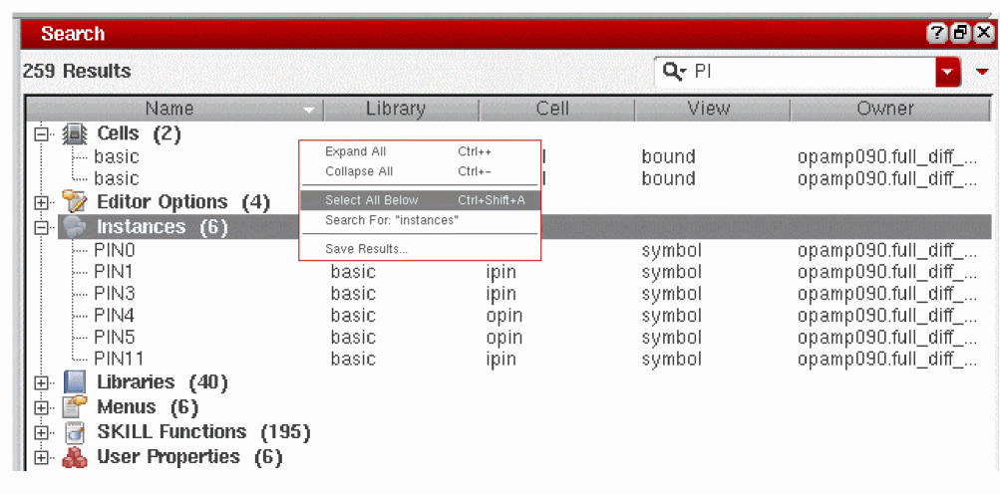

14
The Search Assistant and Toolbar
This chapter contains the following topics on how to use Search functionality in the Virtuoso Schematic Editor L/XL:
- Introducing Search
- Accessing the Search Assistant and Toolbar
- Hiding the Search Assistant and Toolbar
- The Search User Interface
Introducing Search
The Search assistant pane and Search toolbar provide a wide range of design search facilities, including dynamic context search categories, fast keyword directed searching with immediate feedback, and an intuitive user interface (UI) that makes design data searching both simple and productive.
Search uses Virtuoso platform data structures and commands, and presents them through an interactive UI allowing you to refine queries based on the results fed back. Precise searches within searches are then possible as design data is structured and contains unique identifiers for netlisting and backannotation purposes.
Some of the key features provided by Search include the ability to:
- Apply queries to specific categories of design data
- Perform dynamic context aware searching
- Utilize keyword searching with immediate feedback
- Refine search queries on initial search results
-
Text auto-completion based on previous search historyAuto-completion remains in sync between The Search Toolbar, The Search Assistant Pane and the Annotation Browser. If you choose to Clear History in the Search assistant, auto-completion will be wiped.
Search Terminology
To fully appreciate the extent of the functionality provided by Schematics Search, you should be familiar with some of the common terminology used:
| Term | Description |
|
A search option that matches a specific type of content.
Search results are collected in categories which provide a convenient means of characterizing and sorting |
|
|
A collection of In order to provide quick access to related objects, categories can also belong to one, or more, category groups that are always referenced by name.
You can choose to search individual categories or across all categories simultaneously (for example, typing an instance name may generate search results across many categories). Therefore, multi-dimensional searches, and the ability to browse and sort See also the Search Categories Pull-Down. |
|
|
An application specific collection of search
As there is potential for a large amount of design data content, it is important that search space is minimized as much as possible. This helps focus the number of
This search space reduction is achieved by limiting each search to data that is associated with the current view or application. For example, searching a schematic sheet will only return
Categories are registered and unregistered dynamically so that each scope can prioritize hits according to the available context information.
See also Ranking Hits. |
|
|
Displays the most recent search criteria entered. As search queries can be difficult to remember, Search functionality maintains a history of applied queries. These can be accessed through a pull-down menu. See also Search History/Results Pull-Down. |
|
|
A target object that matches a given By instantly displaying search results, you can then refine your search criteria interactively. In schematic views, because many objects have unique identifiers, a single word search will often be sufficient, removing the need to specifically state the object type.
For example, it is common in schematics to use naming conventions to distinguish types of instances (the schematic editor’s automatic naming functionality helps reinforce this). Resistors may be named |
|
|
A special
Each
Implicit keywords are also created for each As you will realize, keywords only become useful once they are known. To help with this a number of conventions and UI aids are provided:
|
|
|
An expression that contains
Each query is first split into multiple terms, each of which is categorized as being either a regular search Words are matched using logical operators specified through the following Find With options: Terms are delimited by whitespace, but the Find With: The Exact Phrase option can be used to define multiple word terms.
The default search mode uses the See also Advanced Search. |
|
|
A collection of |
|
|
Where the search result was found. This could be in the current tab, the current window, all windows, the current hierarchy, or the top-level hierarchy. See also Advanced Search and Displaying The Search Scope. |
|
|
A regular There are four types of word matching that are available: These Match Word options do not apply to keywords, but allow you to take advantage of naming conventions that you may have adopted in your design. See also Advanced Search. |
Accessing the Search Assistant and Toolbar
-
To access the Search assistant pane in Schematics either:
- Select Window – Assistants, and then check the Search option.
- Right-click in the main Schematics toolbar area and select Search from the upper section of the context-menu displayed.
Schematics will embed Search as a docked assistant pane within the current session window; by default, if available, on the right hand side of the canvas area. -
To access the Search toolbar in Schematics :
- Select Window – Toolbars, and then check the Search option.
- Right-click in the main Schematics toolbar area and select Search from the lower section of the context-menu displayed.
- Select the Explore workspace (from either the Window Configuration toolbar pull-down or by selecting Window – Workspaces – Explore).
Hiding the Search Assistant and Toolbar
- To hide the Search assistant pane from the current session window in Schematics either:
- To hide the Search toolbar in Schematic :
The Search User Interface
Search functionality in Schematics comprises of two main search entry mechanisms:
The Search Toolbar
Figure 14-1 The Search Toolbar
The Search toolbar comprises of the following UI components:
- Search Query Entry
- Search Categories Pull-Down
- Advanced Search
- Search History/Results Pull-Down
- Search Toolbar Context-Menus
Search Query Entry
The Search Query Entry field is used to enter any search queries (searches) that you want to perform on the current design data.
When the Search toolbar is inactive, the word Search will be displayed in gray text in the entry field (alternatively, the current category will be displayed). As search queries are entered in the Search Query Entry field, results will begin to display immediately in the Search History/Results Pull-Down.
Ctrl+C keys.Right-clicking over the Search Query Entry field will display a context-menu which will allow to perform a variety of text editing tasks including Cut, Copy and Paste (see also Search Toolbar Context-Menus).
Search Categories Pull-Down
The Search Categories (see
If you want to perform multiple Instances Nets Libraries”.
From the pull-down you can also choose to:
-
Check the Selected option, at the bottom of the pull-down list, to restrict a search query to only those objects that are selected in the current view.
Figure 14-2 Search Categories list -
Click the Options entry to display the Search Options form. From here, you can select and deselect the categories of object that are to be displayed in the Search Categories pull-down. The search options listed here are also known as “search plug-ins”.
Figure 14-3 Full List of Search Options (Plug-Ins)
Advanced Search
The Advanced Search pull-down is located to the far right of The Search Toolbar and The Search Assistant Pane, and provides the following commonly used search options to refine your search results.
Figure 14-4 The Advanced Search Pull-Down
-
The options under the Find With section are used to specify the default matching operators
AND(All Of The Words),OR(Any Of The Words),EXACTLY(The Exact Phrase), andNOT(None Of The Words).
See also Query in the Search Terminology section. -
The options under the Match Word section let you specify a regular query token that must be matched in the current content search data to display a successful result. The options available here are Prefix, Substring, Exactly, or Suffix.
See also Word in the Search Terminology section. -
The options under Using Case let you determine whether search results must be case sensitive (Sensitive Match) or whether any text case is acceptable (Insensitive Match).
For example, you may only want to display search results that have “R1” included in the object name, but not “r1”. In this case, you should ensure the Sensitive Match option is selected. -
The options under From Within allow you to specify the search scope. By default, a search operation will be contained within the Current Tab, however you can extend the scope to cover the Current window, All windows, the Current hierarchy, or the Top-level hierarchy. The search scope options are listed in ascending order of the time anticipated to perform a search.If an application does not provide plug-ins that can run on multiple scopes, the additional scope options will not be available. For example, options to search the Current Hierarchy and the Top-Level Hierarchy are not currently available in the Virtuoso Layout Suite.See also Displaying The Search Scope.
Advanced Search Use Model Example
To locate all devices in a design hierarchy click the Advanced Search pull-down, on the Search toolbar, and then select Top-Level Hierarchy from the From Within section.
The “cells” returned in the query results will detail all of the devices used in the design (sorted by name or library). Each device will also have a Master Status column which can be used to identify unbound devices.
nmos instance”.Search History/Results Pull-Down
The pull-down option on the immediate right of the Search Query Entry field has a dual purpose.
-
When there is no search query specified in the Search Query Entry field, clicking on the pull-down will display a recent Search History list where you can immediately recall the results of any recent searches and reinstate any search options selected when the search criteria was last applied.
Figure 14-5 Search History showing previous searches on “Pins” and “Instance” - Alternatively, as search queries are entered into the Search Query Entry field (or recalled from Search History), the pull-down becomes a Search Results pull-down list, displaying search results dynamically.
Figure 14-6 Clear Query replaces Search History after a search has completed
Figure 14-7 Search History results for a search on “Pins”
You can extend initial search results by performing one of the following:
- Display full search results by selecting the Show All option at the top of the results pull-down. This will display all search results in The Search Assistant Pane where you can investigate them further.
- Display category specific search results by clicking on a category heading in the search results, for example Instances or Input Pins. This will display the full search results for the selected category only in The Search Assistant Pane where you can investigate them further.
You can dismiss search history/results by clicking elsewhere on the session window, or selecting the Esc key.
Ranking Hits
The
Search Results Pull-Down ToolTip Information
Floating your cursor over a specific result in the Search Results pull-down will raise a ToolTip which details full information on the current search result.
For example, if you have an Instance Pin highlighted, the ToolTip will display Name, Instance, Net and Direction property information.
Selecting a Search Result
Selection of an object listed in the displayed Search Results will cause that item to be selected in the current session window view, highlighted in the
Searching Further on Search Results
A right-click over a search result allows you to perform a search on that particular result (for example, “Search For: “vdd!”). Clicking on this option will perform a search within a search, and the search results list will update to only display those search results that include “vdd!”. All other search results will be dismissed.
Search Toolbar Context-Menus
Right-clicking over the following Search toolbar UI components will display a related context-menu.
- A right-click over the Search Query Entry field will display a context-menu which will enable you to perform a variety of text editing tasks including Cut, Copy and Paste.
- A right-click over any object listed in the search results will offer options to:
-
A right-click over a displayed search result will enable you to perform a further search on that particular result (for example, “Search For: “vdd!”). Clicking on this will perform a search within a search and the search results list will update to only display search results that include “vdd!”. All other search results will be dismissed.
-
A right-click over a particular category result may also provide context-menu options related to that object selection. For example, a right-click over a Libraries or Cells category result will provide options to Add Instance or invoke the Library Manager, and a right-click over a Note category result will provide an Edit Note option.Other examples would be right-clicking over a SKILL function result and accessing the SKILL Finder Window, or right-clicking over a key binding and accessing the Bindkey Editor by selecting the Edit Key Bindings option.Figure 14-8 Context-menu Examples for Cells or Key Bindings Results
-
A right-click over a particular category result may also provide context-menu options related to that object selection. For example, a right-click over a Libraries or Cells category result will provide options to Add Instance or invoke the Library Manager, and a right-click over a Note category result will provide an Edit Note option.
Saving Search Results
You can save search results by right-clicking over any displayed results and selecting the Save Results option from the search context-menu.
Selecting Save Results will display the Save Search Results Form from where you can save search results as a .csv file.
This file can then be re-opened in, for example, a text editor or a spreadsheet application.
Figure 14-9 Save Search Results Form
The Search Assistant Pane
Figure 14-10 The Search assistant pane
The interactive Search assistant pane is a dockable/undockable pane that offers additional search viewing information to that offered by The Search Toolbar.
The Search assistant pane becomes active in either of the following cases:
- By choosing to use the Search assistant rather than The Search Toolbar to perform a design search, or
- The Search assistant pane will also become active when a category title is selected in the Search toolbar search results or if you click the Select All option from the Search Results pull-down.
The Search assistant pane comprises of the following UI components that are also available with The Search Toolbar:
- Search Query Entry
- Search Categories Pull-Down
-
Advanced Search
The Advanced Search feature in the Search assistant pane displays available advanced search options using four pull-down menus (Find With, Match Word, Using Case and From Within), as opposed to the one pull-down used on The Search Toolbar.
Clicking again on the Advanced Search pull-down will return you to Basic Search entry mode.
Figure 14-11 Search assistant pane with Advanced Search options displayed
The Search assistant pane also has the following unique UI components:
Search Results Table
As mentioned, the Search Results Table will display search results if you choose to use The Search Assistant Pane rather than The Search Toolbar to perform a design search, or if you choose a
The Search Results Table is a fully populated version of the Search Results pull-down available from The Search Toolbar. It contains a number of features that enable you to better interpret results.
Figure 14-12 Search Results Table
- Table columns can be sorted alpha-numerically by clicking on the table header.
- Table columns can be resized by clicking and dragging the column separators.
- Single clicking on an object category will expand or collapse its contents.
- Context-menus are used to provide access to additional category specific options and additional search options (see also Search Assistant Pane Context-Menus).
- ToolTips are used to detail full information on the current search result (see also Search Results Table ToolTip Information).
Column heading titles are updated depending on the object
If currently available, object selection in the Search Results Table (and the Search Results pull-down) will also be reflected in the
Likewise, if you search on constraints using the Search assistant, selecting one or more constraint results in the Search assistant will cause the constraints to be automatically selected in the
Displaying The Search Scope
For any given search result, the owner is usually a cellview in the form lib:cell:view. As this information can be expansive it is detailed in a separate Owner column, displaying those results found in the current window with a white background and those found out-of-context in a gray background. The Owner column can then be sorted to group results by their source cellview rather than by (the default) object name.
Figure 14-13 The Search Scope is shown in the Owner column
Search Assistant Pane Context-Menus
Right-clicking over the following Search assistant pane UI components will display a related context-menu.
- A right-click over the Search Query Entry field will display a context-menu which will enable you to perform a variety of text editing tasks including Cut, Copy and Paste.
-
A right-click over any object listed in the Search Results Table will offer options to:
- Expand All or Collapse All of the object category results currently listed in the table.
- Open Owner in Current Tab, Open Owner in New Tab, or Open Owner in New Window, allowing you to quick access to the owner cellview.
-
Select All Below allows you to select the contents of the current search results directory, whether it is expanded or folded. When selected, the command will select all the search result rows (visible if the directory is expanded). Selected search results will then be reflected in the Navigator, Property Editor, and design canvas.
Figure 14-14 Search assistant pane context-menu - The Search Results Table context-menu also enables you to perform a search on specific search results (for example, “Search For: “instances”). Clicking on this option will perform a search within a search, and the results table will update to only display those search results that include “instances”. All other search results will be dismissed.
- A right-click over a particular category result may also provide options related to that object selection. For example, a right-click over a Library category result will provide you with options to Add Instance or invoke the Library Manager, and a right-click over a Note category result will provide with an Edit Note option.
- Right-clicking over a column header in the Search Results Table allows you to show or hide any columns currently on display or hidden. Check or uncheck the column name as appropriate. This context-menu also provides Expand All or Collapse All object category options.
- Right-clicking over the Search Results Table at any time will display a Save Results option. For more information on saving search results see Saving Search Results.
Search Results Table ToolTip Information
Floating your cursor over a specific search result in the Search Results Table will raise a ToolTip which details full information on the current search result. This is especially useful when data is obscured.
For example, if you have an Instance highlighted, the ToolTip will display Name, Library, Cell, View and Owner information.
Return to top